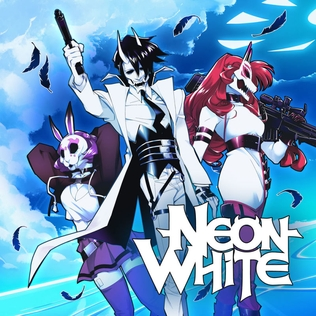

Video Games
If I ever have freetime then I am usually playing video games. I have always connected with others through video games. My dad introduced me to Minecraft when I was 5 and ever since then I've never looked back. Here are some of my favorite video games.

-
Outer Wilds
-
Price: $24.99
-
My Rating: 10/10
- Outer Wilds is a space exploration game set in a dying star system. You are a species that is trying to find out the history of the species that lived in the area before. Outer Wilds is a game that you experience on your own It's all about exploration and investigation. You are encouraged to read everything and peice together what wiped out the species that came before you. Outer Wilds is not only an experience but also just a fun game to play. The added time loop mechanic makes the experience that much more exciting.

-
Neon White
-
Price: $24.99
-
My Rating: 9/10
- While Outer wilds is a very story based game, Neon White is not. Neon White is a shooter platformer that focuses on going fast. You are actively encouraged and required to complete each level quickly. The game rewards with you medals when reaching certain time markers. Beating the developer's time for each level also earns you a medal. The game gives you many incentives to keep playing and the main gameplay loop is very fun and doesn't get tiring. Neon White is just pure fun.

-
Portal 2
-
Price: $9.99
-
My Rating: N/A (Haven't beaten it yet)
- If you don't know what portal is, it's a puzzle game centered around using portals to move throughout levels, manipulate objects, and abuse their physics. Each level is challenging but not rage inducing. It's fun to mess around with portals and progress toward solving the puzzle. The story is also very interesting. I never beat portal 1 and although this is a continuation of that story. You don't need to play Portal 1 to understand the story. The voice acting in this game is very impressive and the story itself is funny and engaging. Overall fun game.
Music
I've always had a facination for music. I like listening to how the instrumentals and vocals of tracks mix and digging into the back end of the music. I genuinely love listening to music and discovering new music. I find that people using both their lyrics and the instrumentals that they create to evoke emotion facinating. It's so cool what music can do for people.
-
Tyler, the Creator
-
Favorite Album:
IGOR, 2019 -
Favorite Song:
SORRY NOT SORRY - My favorite thing about Tyler's music is how he is able to bring in many different influences and create a cohesive beautiful piece. Tyler makes mostly hip hop music but dabbles in RnB and more indie music. His lyrics are also very unique to him. It feels like only he can be the one saying what he's saying. In my favorite song of his, SORRY NOT SORRY, Tyler goes over all of his regrets throughout his years of fame and apologizes for anything he's ever done. That song gives me chills. It feels like he has been waiting to get this off his chest for the longest time.
-
Gorillaz
-
Favorite Album:
Plastic Beach, 2010 -
Favorite Song:
Empire Ants (feat. Little Dragon) - Gorillaz is a virtual band created by Damon Albarn, the front man of Blur. Gorillaz has one of the most diverse discographies out of any band. Gorillaz is a mix of rock, pop, and electronica with many hip hop influences. They collaborate with rappers fairly often My favorite album by them, Plastic Beach has all of these genres mixed within but has this extra cinematic effect. There are many orchestral sections That that have some of the most beautiful melodies i've ever heard. Empire Ants has this same effect. Especially when Little Dragon comes in at the end and begins singing with a euphoric drop playing behind her.
-
JPEGMAFIA
-
Favorite Album:
LP! -
Favorite Song:
HAZARD DUTY PAY! - JPEGMAFIA, also known as Peggy, is one of the most fun artists I've ever heard. His music is so creative that it's hard to describe. It's hardcore Hip-Hop with the most interesting samples you will ever hear. HAZARD DUTY PAY! has a soul sample that plays throughout the track that sounds so good with the booming beat that goes along with it. Peggy's almost screaming vocals add to the hype of this track. Whenever I want to be hyped up, I turn on Peggy's music and I instantly become motivated and energized. Peggy is also very versatile as an artist. He can sing, rap, and produce. Peggy has made some beautiful tracks also. Free the Frail (feat. Helena Deland) has a beautiful and introspective chorus that reflects on Peggy's career as a musician.